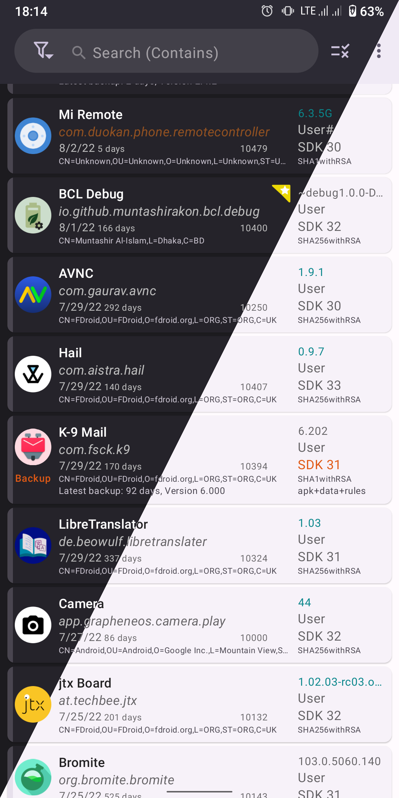
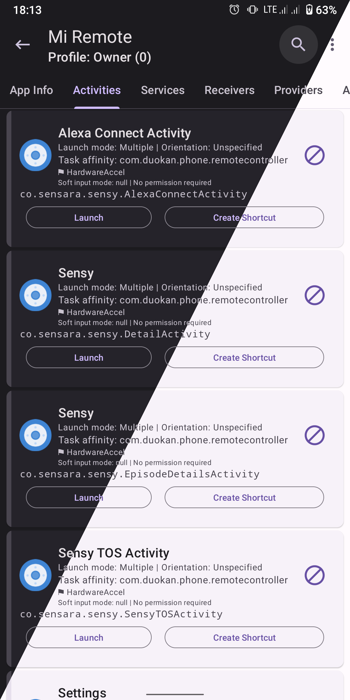

App Manager 藏了这 5 个功能，90% 的人只用来备份 APK
备份应用、冻结组件只是 App Manager 的冰山一角。从导入 TitanBackup 到 root 下扒应用私有数据，这些隐藏功能一个比一个能打。
你从官方下载拿了 App Manager，平时用它干的事大概就是：备份个 APK、冻结几个广告组件、偶尔查查应用权限。我以前也是这样——直到某天深夜翻它的三点菜单翻到凌晨三点，才发现这货根本不是个"备份工具"那么简单。
它的官网上藏了一堆不怎么宣传、但折腾党用了就回不去的功能。有的在实验室里躺着，有的藏在长按菜单里，还有的要配合 ADB 或 root 才露出真面目。下面逐个挖。
导入 TitanBackup 的备份——换工具不丢数据
这是 v3.0 加的功能，但我身边没一个人知道。你之前可能用过 TitanBackup、Migrate、Helium 这些备份工具——换 App Manager 之后那些历史备份怎么办？删了可惜，留着也没法用。
App Manager 能直接导入。
路径挺深：三点菜单 → 备份/恢复 → 导入，然后系统文件选择器里选你的旧备份文件或目录。它会自动识别格式，支持 TitanBackup 的自定义目录结构、Migrate 的备份、甚至 Android 原生的 .ab 文件，还有旧版 App Manager 自己的备份。导入后这些备份会被转换到 App Manager 的标准目录里，和你新做的备份放在一起，直接就能恢复。
最爽的是规则也能导入。如果你之前用 Watt 或 Blocker 拦了一堆组件规则，不用一个个在 App Manager 里重新配——把规则文件丢进去就自动转格式。反过来 App Manager 也能导出给它们。
但这里有个坑要提：ADB 备份从 Android 12 开始就不太靠谱了，Google 强制越来越多应用设置 allowBackup="false"，导进来可能是空的或者数据不全。作为历史遗留功能还能用，但新设备上别太指望它。

内置文件管理器——配合 root 看应用私有数据
谁能想到 App Manager 里藏着一个文件浏览器？而且不是个摆设。
打开路径：三点菜单 → 标签（就是那个 Labs 实验室）→ 文件管理器。第一次进去我愣了一下——这不就是个轻量文件管理器吗？能浏览内部存储、SD 卡、USB OTG，能复制移动重命名，还内置了 ZIP 压缩解压。
但真正的杀招是配合 root。root 下它能访问 /system、/data、/etc 这些系统分区，还能直接扒进 /data/data/<包名>/ 看应用的 Shared Preferences、数据库、缓存。配合实验室里的共享偏好编辑器和代码编辑器，一套轻量逆向工具链就齐活了——想改某个应用的配置参数？不用装别的工具，App Manager 里直接搞。
另外它打开 APK 会自动触发 App Manager 自己的安装流程，比系统文件管理器多了一层安全检查。日常文件管理还是用 Solid Explorer 吧，但要看应用私有数据、翻备份目录、或者在 root 下改点东西，这个内置的够用。
权限三层拆解——比系统设置细十倍
系统设置里看应用权限就是个开关列表，但 App Manager 在应用详情页的「权限」标签页里（这块文档里有详细拆解），把权限拆成了三层：Manifest 声明了哪些、运行时实际授权了哪些、App Ops 里的细粒度操作权限。
普通用户可能只用到前两层——看看哪些应用声明了 CAMERA 或定位这些危险权限（红色标记）。但 ADB 或 root 用户能玩第三层：App Ops。
举个例子，你给了某个应用定位权限，但不想让它在后台也定位。系统设置里做不到——权限要么开要么关。App Manager 里进 App Ops，把定位的 mode 改成「仅前台允许」就行。应用在后台时就算有定位权限也拿不到位置。类似的还有唤醒、网络、通知等十几个操作维度，每个都能单独设模式。
撤销权限也比系统设置灵活。系统里点撤销只能回到「问我」或「拒绝」，App Manager 还能直接改 App Ops 的 mode，精细化控制而不是一棍子打死。

Debloater 四色分级——预装清理不再瞎删
我之前清预装是看到不用的就卸，直到某次卸了个看起来没用的厂商服务，结果 NFC 直接挂了。App Manager 的 Debloater 页面用颜色给预装分了四个等级：
绿色是安全级，删了完全没影响，推广 App、你不用的厂商商城都在这一档。黄色谨慎级，删了可能丢某个功能——比如图库删了如果系统找不到替代会崩，NFC 相关删了 NFC 就废了。红色危险级就是核心组件，Launcher、Phone、SystemUI 这些别动。蓝色图标是替代推荐，告诉你这个预装可以卸了换开源替代品。
页面顶部还有筛选器，能按风险等级、是否有追踪器、是否有替代来快速定位。我现在的习惯是先筛「安全 + 有追踪器」，把带追踪的推广 App 先清了；谨慎级的先冻结试几天，确认没问题再卸；危险级的直接跳过。每个要卸的预装先备份个 APK，后悔了能装回来。
一个容易被忽略的细节：规则双向同步
之前说过 Watt 和 Blocker 的规则能导入，但反过来——你在 App Manager 里配的拦截规则也能导出给它们。这个设计挺良心：你换工具不用重新配，几个工具之间规则可以互转。在组件拦截组的设置里就能找到导出选项，native、Watt、Blocker 三种格式任选。
最后说几个别踩的坑
root 用户注意：内置文件管理器在 root 下连只读分区都能写，别手贱去改 /system 里不认识的文件，改挂了要刷机。导入旧备份如果数据不全，大概率是原备份在不同 Android 版本上创建的结构不一样，或者原应用用了备份保护机制——这种情况 App Manager 的日志里会有具体报错，可以去「设置 → 高级 → 日志」里翻。
权限撤销别一视同仁。有些应用强依赖某个权限，撤了直接崩。特别是系统组件的权限，除非你很清楚后果，否则别动。
App Manager 的这些隐藏功能，说白了就是把「我能做到什么」和「我建议你怎么用」分开了。大多数人用它做备份和冻结就够了，但如果你愿意往深了挖——root 下扒数据、跨工具导规则、精细化控权限——它能干的事比同类工具多太多。关键是你得知道它藏在哪。
说了这么多，还是那句老实话——工具本身的能力不重要，重要的是你愿不愿意花半小时翻一下它的三点菜单。说不定你用了两三年的工具，从来没见过它真正的样子。关于 App Manager 的这些深度玩法，我维护了一份小抄，在 GitHub、Gitee、GitCode 都有，选能访问到的那份就行。